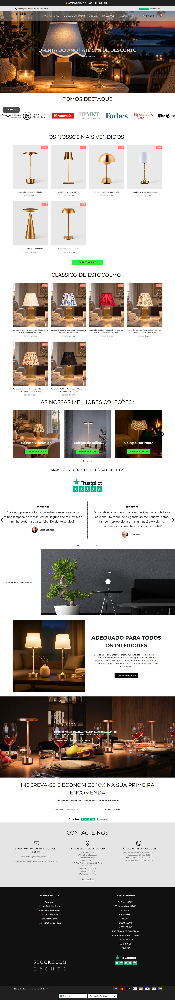
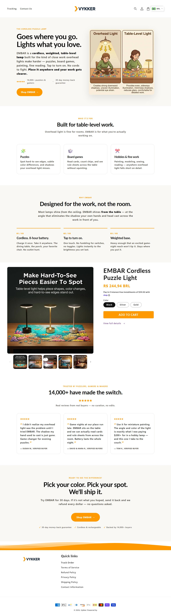
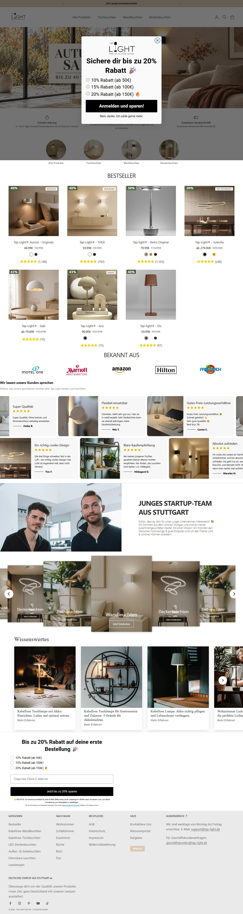
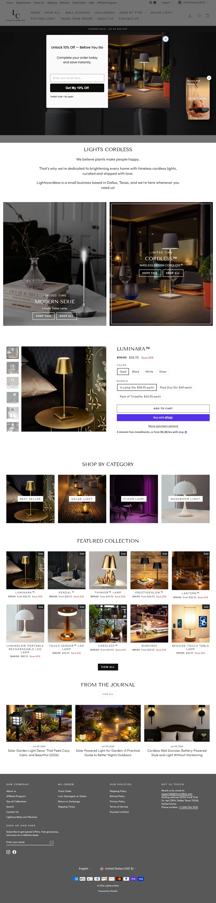
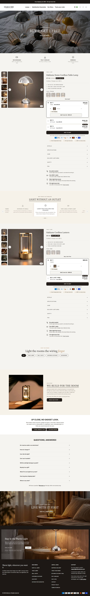
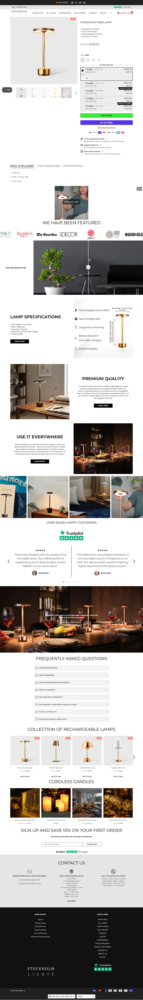
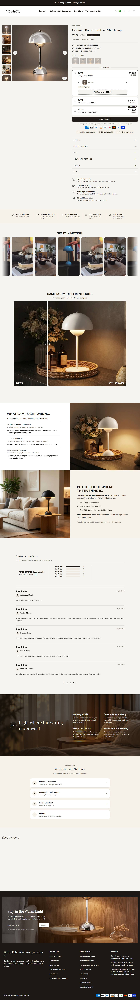

Home e página de produto das lojas que importam, no computador e no celular, com o que copiar e o que evitar. No fim, o blueprint da Oaklume: home e página de produto desenhadas na identidade da marca.
4 concorrentes · 21 capturas lidasblueprint em 4 quadros (computador e celular)texto da loja em inglês, rascunho
01Por que estas 4 lojas
317
lightsstockholm.com · anúncios ativos
dropship puro · MODELAR · busca pela URL do site
observado · API oficial e busca pela URL
86
vykker.com · anúncios ativos
dropship puro · MODELAR · busca pela URL do site
observado · API oficial e busca pela URL
34
tap-light.de · anúncios ativos
dropship de marca · MODELAR · busca pela URL do site
observado · API oficial e busca pela URL
17
lightscordless.com · anúncios ativos
dropship de marca · MODELAR · busca pela URL do site
observado · API oficial e busca pela URL
Critério: sinal de escala e relevância para a decisão, não achismo visual. Entraram as lojas de veredito MODELAR (lightsstockholm.com, vykker.com, tap-light.de e lightscordless.com). Os prints são da visita normal às lojas, sem máscara de automação: 21 de 35 capturas funcionaram. Também há captura de pridola.com, oaklumehome.com e luceko.com, que ficou fora da comparação por não ser molde nem concorrente direto do país escolhido.
02Home no computador
lightsstockholm.comMODELAR

dropship puroCopie: Oferta em par no preço de uma luminária premiumEvitar: Prazo de 7 a 40 dias úteis com envio da China
vykker.comMODELAR

dropship puroCopie: Uma página de produto por ângulo de uso (puzzle, craft, game)Evitar: Devolução só para defeito em até 5 dias
tap-light.deMODELAR

dropship de marcaCopie: Página em alemão nativo com empresa local visívelEvitar: Prazo de entrega não declarado na política
lightscordless.comMODELAR

dropship de marcaCopie: Google como canal principal para luminária sem fio de US$ 50 a 60Evitar: Símbolo ™ em nome de produto sem registro
Nossa Oaklumeblueprint

Oferta clara, marca própriaCopiar: não obtidoo build não trouxe esta ofertaEvitar: Sem preço riscado inventado nem contador de escassez: o Merchant reprova.
Limite da leituraA coluna "copiar" e "evitar" vem das fichas das lojas (oferta, política, mídia), não de uma leitura visual pixel a pixel. Prints tirados por script da skill em 06/10/2026: home, página do produto campeão e carrinho com item. Conferidos pelo tamanho do arquivo, sem leitura por pessoa. Texto completo das fichas na seção 06 e nos dossiês.
03Home no celular
lightsstockholm.comMODELAR
não obtidoprint não capturado
dropship puro
vykker.comMODELAR
não obtidoprint não capturado
dropship puro
tap-light.deMODELAR
não obtidoprint não capturado
dropship de marca
lightscordless.comMODELAR
não obtidoprint não capturado
dropship de marca
Nossa Oaklumeblueprint
não obtidocaptura da maquete ainda não gerada
Oferta clara, marca própria
04Página de produto (PDP) no computador
lightsstockholm.comMODELAR

dropship puroCopie: Coleção com nome de cidade em cada modeloEvitar: Alegação de "20.000+ clientes" sem prova pública
vykker.comMODELAR
dropship puroCopie: Anunciante com nome de clube de hobbyEvitar: Prazo de 8 a 12 dias úteis sem dizer na página do produto
tap-light.deMODELAR
dropship de marcaCopie: Luminária de parede com bateria como segundo heróiEvitar: Prazo de entrega não declarado na política
lightscordless.comMODELAR
dropship de marcaCopie: Nome curto por modelo (Kendal, Luminara)Evitar: Misturar jardim solar no mesmo catálogo
Nossa Oaklumeblueprint

Oferta clara, marca própriaCopiar: Segunda luminária de parede a £ 32,90 (as paredes pedem par; a Pridola vende o par)
05Página de produto no celular
lightsstockholm.comMODELAR
não obtidoprint não capturado
dropship puro
vykker.comMODELAR
não obtidoprint não capturado
dropship puro
tap-light.deMODELAR
não obtidoprint não capturado
dropship de marca
lightscordless.comMODELAR
não obtidoprint não capturado
dropship de marca
Nossa Oaklumeblueprint
não obtidocaptura da maquete ainda não gerada
Oferta clara, marca própria
06Leitura de oferta e política inferido
Critério
lightsstockholm.com
vykker.com
tap-light.de
lightscordless.com
Nossa direção
Veredito
MODELAR
Oferta de luminária premium em par ("compre 1, leve 2"), nome de coleção por cidade e rotação diária de criativos na Meta. Não cobre o prazo de 7 a 40 dias nem a fachada em Londres.
MODELAR
Um produto vendido por ângulo de uso (puzzle, craft, game) com página de clube como anunciante. Não cobre o prazo de 8 a 12 dias úteis.
MODELAR
Rota da Alemanha (terceira colocada): marca própria, página em alemão e Google pago. Não cobre o Reino Unido.
MODELAR
Canal Google (Shopping e pesquisa) com luminária sem fio de US$ 50 a 60 e nome próprio por modelo. Não cobre as lanternas solares de jardim, outro nicho.
Luminária de parede adesiva sem fio a £ 42,90 (custo de £ 9,52, mediana de busca a conferir) a £ 42,90
O que copiar
Oferta em par no preço de uma luminária premium
Coleção com nome de cidade em cada modelo
Uma página de produto por ângulo de uso (puzzle, craft, game)
Anunciante com nome de clube de hobby
Página em alemão nativo com empresa local visível
Luminária de parede com bateria como segundo herói
Google como canal principal para luminária sem fio de US$ 50 a 60
Nome curto por modelo (Kendal, Luminara)
bump: Segunda luminária de parede a £ 32,90 (as paredes pedem par; a Pridola vende o par); o prazo real da amostra, igual no site, no feed e no Merchant
O que evitar
Prazo de 7 a 40 dias úteis com envio da China
Alegação de "20.000+ clientes" sem prova pública
Devolução só para defeito em até 5 dias
Prazo de 8 a 12 dias úteis sem dizer na página do produto
Prazo de entrega não declarado na política
Símbolo ™ em nome de produto sem registro
Misturar jardim solar no mesmo catálogo
Sem preço riscado inventado nem contador de escassez: o Merchant reprova. Nada de avaliação de outra loja.
07Carregamento observado
21 de 35
capturas de tela feitas
por visita normal, sem contornar bloqueio
observado · registro das capturas de tela
não obtido
tempo de carregamento por loja
não houve teste de carregamento nesta rodada
observado
Medida
Situação
Tempo até o conteúdo carregar (DCL)
não obtidonão medido nesta rodada
Tempo até carregar tudo (load)
não obtidonão medido nesta rodada
Número de recursos
não obtidonão medido nesta rodada
Transferência total
não obtidonão medido nesta rodada
Scripts de terceiros
não obtidonão medido nesta rodada
Peso das imagens
não obtidonão medido nesta rodada
Falhas de carregamento
não obtidonão medido nesta rodada
Lacuna declaradaÉ laboratório, não Core Web Vitals de campo. Nenhuma das lojas comparadas teve carregamento medido; o carregamento da sua loja se mede depois de montada.
08Auditoria de imagens
11 a 57
imagens por página de produto nas lojas campeãs
contagem dos carrosséis dos 5 campeões
observado
40
imagens de referência baixadas
5 produtos, com carrossel em amostra
observado
não obtido
conferências visuais
o build não trouxe a conferência visual das referências
observado
não obtido
tipo de cada imagem (foto limpa, em uso, guia)
ninguém abriu as imagens: classificação por posição e legenda
observado
Produto
Concorrente
Carrossel real
Baixadas
Confere com o produto
Únicas
Status
Oaklume Peel-and-Stick Wall Light
pridola.com
57
não obtidoconferência visual pendente
não obtidodeduplicação visual não feita
CARROSSEL COMPLETO
Oaklume Dome Cordless Table Lamp
lightscordless.com
19
não obtidoconferência visual pendente
não obtidodeduplicação visual não feita
CARROSSEL COMPLETO
Oaklume Task Light for Puzzles & Reading
vykker.com
13
não obtidoconferência visual pendente
não obtidodeduplicação visual não feita
CARROSSEL COMPLETO
Oaklume Bistro Cordless Table Lamp
lightsstockholm.com
11
não obtidoconferência visual pendente
não obtidodeduplicação visual não feita
CARROSSEL COMPLETO
Oaklume Cordless Lantern
luceko.com
11
não obtidoconferência visual pendente
não obtidodeduplicação visual não feita
CARROSSEL COMPLETO
Conferência visual feitaMétodo. As concorrentes que escalam mostram a luminária acesa em ambiente real, sem fio à vista, e a cena de instalação (colar na parede, carregar por USB-C); a foto de estúdio sobre fundo branco aparece só no fim do carrossel.
09Blueprint da sua loja monte a SUA assim
A planta visual da SUA loja: a home e a página de produto já desenhadas na identidade da marca Oaklume, com a copy em inglês nos lugares certos (rascunho, a revisar por falante nativo). É o layout para reproduzir na Shopify.
Como ler. Os blocos com fundo claro e um rótulo no canto (ex.: "IMAGEM · direção de arte") são onde entram as imagens. As fotos de concorrente nas galerias são marcadores temporários, identificados como tal, a trocar pela foto do fornecedor. As caixas de avaliação estão vazias de propósito: não existe avaliação desta loja. Todo o resto (textos, botões, preço, oferta) já está no lugar final. Para traduzir depois, troca-se o texto sem mudar o layout.
1 · Layout desktop · Home à esquerda, página de produto à direita
Como as duas páginas ficam no computador. É o mesmo site: o que muda no celular é só o empilhamento dos blocos. Role dentro de cada janela pra ver a página inteira.
A ordem dos blocos não é estética, é psicológica. A home abre com o gancho do anúncio, mostra as coleções, apresenta o produto principal junto do complemento oferecido na própria página, põe prazo e política cedo e fecha com o convite final; as avaliações ficam vazias até as primeiras vendas. Por que o prazo e a política vêm cedo: Prazo ou política diferente entre o site e o Merchant é gatilho de reprovação. Na página de produto a barra de compra fica no fim do fluxo, sem posição fixa, e o celular recompõe os blocos em uma coluna.
10O que ainda precisa de validação real
antes de construir
Conferir no checkout, com endereço britânico, o custo do fornecedor atual de cada luminária
Criar as páginas de frete e devolução e instalar o pixel da Meta e a tag do Google
Trocar o tema Impact por um tema com licença da loja oficial ou comprar a licença
Pedir amostra do produto e ter a foto real do fornecedor
antes de escalar
Medir o carregamento da loja publicada (hoje não medido)
Criar o desconto de quantidade e a oferta de carrinho e conferir com pedido de teste
Aprovação do blueprint: critérios funcionais
Critério
Estado
O que sustenta
O que falta
Identidade profissional
passa
Nome, 7 cores e duas fontes da marca aplicados nos dois mockups, com a mesma linguagem em home e página de produto.
O logo ainda não foi gerado (os 4 prompts estão na identidade visual); domínio e registro do nome não verificados.
Oferta clara
passa
Preço do produto principal, order bump e upsell aparecem no lugar final, sem preço riscado inventado.
O prazo de entrega é lacuna declarada até a cotação do fornecedor.
Prova verdadeira
passa
Nenhuma avaliação inventada: os campos de prova estão vazios de propósito em 5 de 5 produtos, e as caixas de avaliação dos mockups mostram o estado vazio.
Avaliações reais só depois das primeiras vendas.
Checkout funcionando
pendente
O mockup é uma maquete e não tem checkout. O pagamento da loja real é Shopify Payments (todos os cartões) e PayPal.
Conta de recebimento que venda no Reino Unido em libra esterlina, e pedido de teste com 1, 2 e 3 unidades para conferir o desconto de quantidade.
Em resumo: 3 dos 4 critérios passam e 1 fica pendente (checkout funcionando). "Prova verdadeira" significa que não há avaliação inventada. A exigência de superar visualmente os concorrentes saiu: o blueprint é aprovado pelo que funciona, não pelo que enfeita. Conversão da loja nova não se mede em maquete: o limite está na régua de parada do plano.
Próxima ação
Montar home e página de produto no celular primeiro, conforme o blueprinta estrutura pode ser montada antes; prazo, especificação do produto e fotos só depois da cotação e da amostra